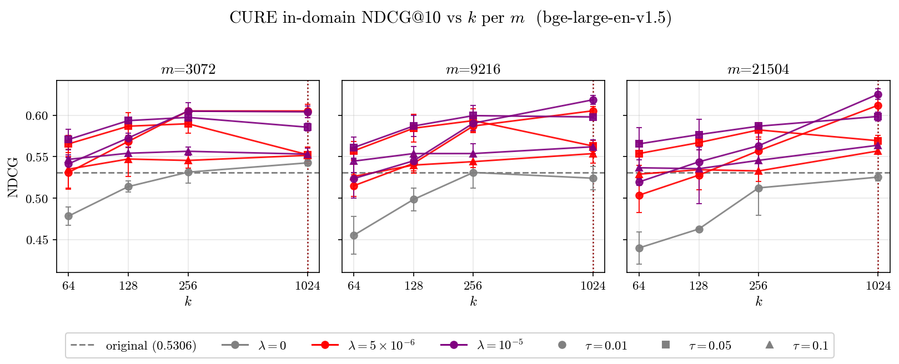
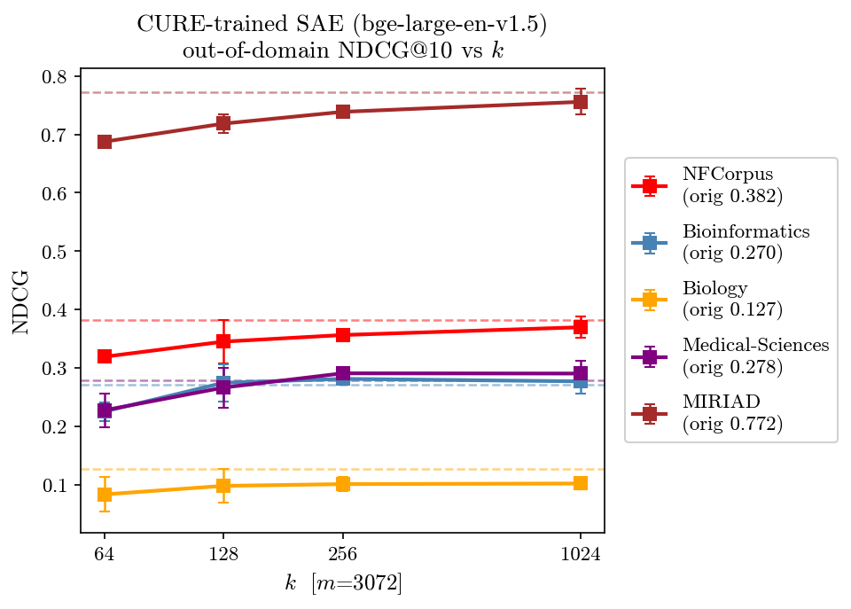
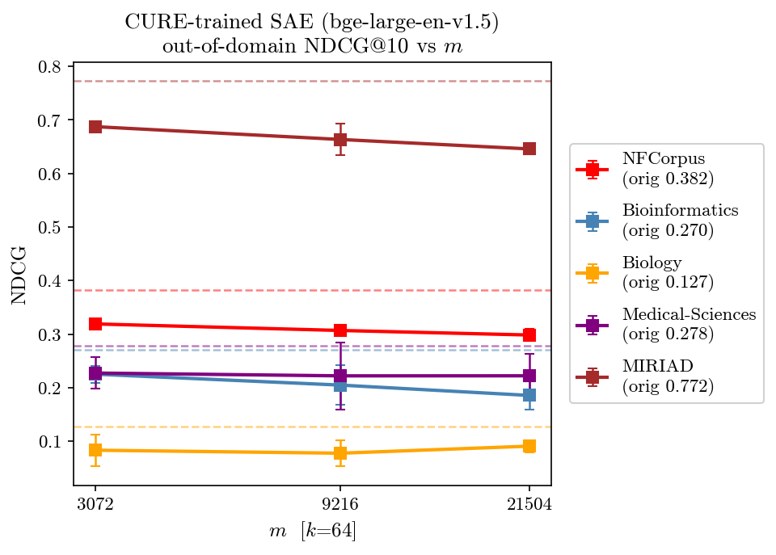

目录 · 7 节
1先把后文要用的几个词说清楚2为什么要在稀疏编码上再拉一把相关性3走一遍：差得最多的四个神经元偏向了谁4域内变好，换一套语料会不会掉下来5这些神经元的意思，换语料还认不认6这对做医学检索的人意味着什么7局限写了答案的段落排到第 23 名：稀疏自编码器怎么拆开这次医学检索有人问：「新生儿口服维甲酸，该做哪些化验，多久做一次？」检索要从大约 24 万条医学段落里找出能回答的那几段。
排在第 4 的段落在讲异维 A 酸化验异常，写的是痤疮病人，通篇没有孩子或新生儿。真正写了答案的段落说，血脂和肝功能要在基线、用药一个月后、之后每三个月各查一次。它却排在第 23 名。
你看见的只是两条向量的相似度分数和一串名次，看不出系统到底在比哪几个意思。
这篇论文来自巴黎 Doctolib AI Research Lab，要给医学检索一个能看懂、还能迁到新语料上的解释。现在常用的做法，是用 BGE 这类通用文本 embedder，或在临床数据上微调过的 MedEmbed，把查询和文档编成稠密 embedding，再按余弦相似度排序；每个维度缠在一起，很难指出一篇文档是靠哪几个意思排上来的。稀疏自编码器（SAE）本来多用在大模型内部激活上，把缠在一起的特征拆到更高维、每次只亮少数几个。Kang 等人把它用到通用检索集 MSMARCO 的 BGE embedding 上，并用 KL 散度去对齐原模型已经学好的相关性。医学语料上作者没有沿用这个假设，因为 bge-large-en-v1.5 和 gemini-embedding-001 的训练数据并未公开。于是作者把 embedder 冻住，在它的稠密 embedding 上训练 TopK SAE：重建损失留住原向量里的信息，再用查询-文档的真实性标注做 InfoNCE，把相关的稀疏编码拉近。在临床检索基准 CURE 上，BGE 的原始 NDCG@10 是 53.06，同样做对比学习但取满维（k=1024）时到 61.87；只保留 128 或 256 个激活维度，也能达到满维成绩的 94% 以上。在五个未见过的医学检索集上，稀疏模型相对满维对比学习更少掉点，尤其当目标语料离 CURE 更远时。只在 CURE 上写好的特征解释，拿到这些新语料上仍能正向预测神经元会不会被激活。
稀疏特征能把单条检索拆开看，解释也能迁到没见过的语料；但这套在 CURE 上训练的模型，域外多数时候仍低于原始 embedding。
先把后文要用的几个词说清楚
稠密 embedding 是一串长度为 d 的实数，BGE 和 MedEmbed 是 1024 维，Gemini 是 3072 维。SAE 先把它映射到更宽的空间，宽度记作 m，比如 3072，再只留下激活最大的 k 个位置，其余置零。论文把这种做法叫 TopK SAE，沿用的是 Gao 等人 2024 年的写法。算完之后你拿到的是一条稀疏编码：大多数位置是 0，亮着的位置往往更容易被读成一个意思，比如 infant health（婴儿健康），但不保证每一个都对应单一清晰的概念。
检索时比的是查询和文档这两条稀疏编码的余弦相似度。训练时 embedder 始终冻住，只更新 SAE。
论文还把 k 等于原 embedding 维度、同时又扩到更大 m 的模型叫做 dense：隐层仍然宽于原维度，TopK 最多留下 d 个非零位置，对比学习还在，只是激活数顶到了原维度。后文把这个对照称作 dense 模型，61.87 指的就是 BGE 上 k=1024 的这一档，不是 k=64 那种更稀的编码。衡量排序质量用 NDCG@10，只看前 10 条，越相关、排得越前，分数越高，论文里按百分数报告。
CURE 是训练用的临床检索集，语料约 24.46 万条，问题 2000 条，按 1400、200、400 划分训练、验证和测试，来源以学术生物医学文献为主。另外五个集合只用来测试，训练时完全不用：MIRIAD（生物医学文献检索集）和 NFCorpus（医学营养检索集）的体裁更接近 CURE，R2MED（医学社区问答检索集）的三个子集（Biology、Bioinformatics、Medical-Sciences）查询来自 StackExchange，语料更偏 Wikipedia，离 CURE 更远。
为什么要在稀疏编码上再拉一把相关性
只把稠密 embedding 重建回去，稀疏编码里会留下原向量的信息，但不保证查询和相关文档会被拉近。论文在 MSMARCO 上的已有做法是用 KL 散度去对齐原 BGE 已经学好的相关性。这里换了医学语料，原模型的训练数据又没公开，作者改用带标注的 InfoNCE：每个查询配一条已标为相关的文档，把两条稀疏编码拉近。负例来自同一批里其他配对文档，以及重建用的文档批次；其中其他已知相关文档会被掩掉，不进分母。总损失是重建项加上 λ 乘 InfoNCE。
λ 取 0，就是把对比项关掉，只做重建。在 CURE 上，这一项很关键。对 k 和 m 都等于原维度、完全不扩展的对照模型，只做重建时，BGE 的 NDCG@10 比加上对比学习低 7.5 个点，而且不高于原始 embedding。后文的扫描图里也能看见：灰线（λ=0）贴着或低于原始 BGE 的虚线，加上 InfoNCE 之后，域内分数才明显升上去。
走一遍：差得最多的四个神经元偏向了谁
下面用论文图 1 里这条新生儿维甲酸查询，数字都来自原文。模型是在 BGE embedding 上训练的 SAE，每次只亮 64 个神经元，总宽度 m=3072。作者拿出查询和两条段落上激活差得最多的四个神经元，数字是每条文本上、经过 ℓ2 归一化之后的激活值。排序是在全部 244,600 条 CURE 段落上按稀疏编码的余弦相似度排的。
第一步，看查询自己亮了什么。四个神经元的名字是 laboratory（化验）、retinoids（维甲酸）、surveillance（监测）、infant health（婴儿健康），激活分别是 0.183、0.400、0.220、0.400。问题里既有药和化验，也有新生儿这个人群；retinoids 和 infant health 的激活都是 0.400，一样强。
第二步，看排在第 4、标签为不相关的段落 A。它讲的是痤疮病人的异维 A 酸化验监测，从未提儿童或新生儿。四个激活是 0.306、0.375、0.229、0。infant health 恰好是 0。它赢在前三个字面概念上，因为这些词它反复在写。
第三步，看写了答案、标签为高度相关、却排在第 23 的段落 B。它把「血脂和肝功能在基线、一个月后、之后每三个月检查」写在一段关于生存的文字里，既没写 laboratory，也没写 monitoring，这两个神经元都是 0；retinoids 是 0.248，infant health 是 0.109。只有婴儿健康这个概念站在它这边。
第四步，排序比的是 ℓ2 归一化之后的余弦相似度，每一维的贡献是查询激活乘以文档激活。按文中给出的三位小数：段落 A 上四维贡献是 0.183×0.306≈0.056、0.400×0.375=0.150、0.220×0.229≈0.050、0.400×0=0，合计约 0.256；段落 B 是 0、0.400×0.248=0.099、0、0.400×0.109≈0.044，合计约 0.143。三个概念偏向 A，只有 infant health 偏向 B。这说明论文所说的「三比一」指的是概念个数，不是把文档激活加总后的强度比。这四个神经元分别占了段落 A、B 与查询余弦相似度的 53% 和 35%。
这组数字能说明的是：在差得最多、又占了两条余弦一多半或三分之一的四个特征里，字面重叠偏向了不相关的段落。完整排序还有其余激活在参与，不能单靠这四维还原全部名次。它也不能单独证明这些特征的名字换一套语料还成立，那要看后面的激活预测。
域内变好，换一套语料会不会掉下来
解释能看见单次检索，把检索改成稀疏编码，中间几个 k 还剩多少分？在 CURE 测试集上，BGE 的 k=256 是 60.50±1.02，k=128 是 59.35±0.35，都还在满维 61.87 的 94% 以上，说明稀疏并没有把域内增益吐干净。Gemini 的满维模型（k=3072）域内最高，到 62.07±0.73。三种 embedder 在所有试过的 k 上都高于各自的原始 embedding，最高分都出现在满维模型上。

来源：论文 HTML 结果图，图题为 CURE in-domain NDCG@10 vs k per m (bge-large-en-v1.5)
域外不是同一件事。把在 CURE 上训好的模型直接拿到五个未见过的集合上，更接近 CURE 的 MIRIAD 和 NFCorpus 分数随 k 增大而回升，并在满维附近最高，但仍低于原始 BGE。离得更远的 R2MED 三个子集，换成满维并没有额外好处：在 BGE 上，k=256 的均值已经不低于满维，Bioinformatics 是 28.10 对 27.21，Biology 是 10.06 对 8.37，Medical-Sciences 是 29.05 对 27.33。这说明在更远的语料上，多出来的容量帮不上忙；Biology 上两者都低于原始的 12.72，只是稀疏掉得少一些。
| 数据集 | 原始 BGE | SAE k=256 | dense k=1024 |
|---|---|---|---|
| CURE（域内） | 53.06 | 60.50±1.02 | 61.87±0.55 |
| NFCorpus | 38.17 | 35.61±0.08 | 36.62±0.29 |
| MIRIAD | 77.24 | 73.85±0.92 | 75.05±0.36 |
| Bioinformatics | 27.04 | 28.10±0.89 | 27.21±1.98 |
| Biology | 12.72 | 10.06±1.17 | 8.37±0.65 |
| Medical-Sciences | 27.78 | 29.05±0.80 | 27.33±1.72 |
（数字来自论文正文检索结果表，NDCG@10，百分数；带 ± 的是 3 个随机种子上的均值和 95% 置信区间）

来源：论文 HTML 结果图，图题为 CURE-trained SAE (bge-large-en-v1.5) out-of-domain NDCG@10 vs k
容量不只由 k 决定，总宽度 m 也在起作用。对满维模型，域内分数随 m 增大而升，域外更吃小的 m，或者根本不动。k 不超过 256 时，每个集合上都是最小的 m 更好或打平。对比项 λ 也是这样分开走的：λ>0 在域内最好；满维模型在全部域外集合上反而是 λ=0 更好；稀疏模型（k 不超过 256）上，开不开对比项差别不大，两种配置都会有略高的时候。稀疏编码因此在 CURE 上训练时，域外掉点比满维对比学习更少。

来源：论文 HTML 结果图，图题为 CURE-trained SAE (bge-large-en-v1.5) out-of-domain NDCG@10 vs m
这些扫描能说明容量和对比项怎样把域内增益和域外掉点拧到一块，不能说明特征的名字本身会不会跟着过去。
这些神经元的意思，换语料还认不认
特征名字是这样来的。对每个神经元，作者在 CURE 里取出激活最高的 5 条文档和 5 条查询，再加上 2 条完全没被点亮的文档，做成三种解释：直接看这些片段；用 TF-IDF 看里面最特有的词；以及交给 Interpreter LLM（medgemma-4b-it）写出一个短标签、一两句描述和至多十个关键词。例如 2177 号神经元被写成 bone：它会对骨组织、骨再生、骨重塑和骨细胞的文本有反应。这套解释只在 CURE 上写一次，五个域外集合原样复用，改的只是被打分的文本。
要检验这些意思靠不靠谱，再把解释交给同一个系列的 Activation Prediction LLM，让它只根据描述，给出这段文本会不会点亮该神经元的概率。若意思稳定，这个概率应和「是否为正例」对得上：正例要求该神经元进入这条文本最强的 20 个活跃特征，负例是完全没被点亮。作者用预测概率与这个二元标签的 Pearson 相关 r 来衡量。对 BGE、k=64、m=3072 的 SAE，Interpreter LLM 的解释在 CURE 上 r=0.440，在五个域外集合上仍为正：MIRIAD 0.334，Bioinformatics 0.290，Medical-Sciences 0.286，NFCorpus 0.257，Biology 0.226。TF-IDF 和它接近，直接喂片段在每个集合上都更差。按 embedder 和解释类型分别算，五个域外集合上激活预测与检索 NDCG@10 的相关在 0.69 到 0.94 之间：意思还能对上的语料，检索也更容易跟着过去。同一套评测里，SAE 特征的可解释性在每个集合、每种描述上都高于原始 embedding，也高于 k 和 m 都等于原维度、做过对比学习但不扩展的对照模型。 Hoot 说
论文里的 2177 号神经元被写成 bone，会对骨组织、骨再生、骨重塑和骨细胞的文本有反应。下面按正文同一套规则走一遍它如何被命名、如何被打成正例或负例。第 21 名那个边界是示意，用来看清「有激活」和「算正例」不是一回事。
最高激活的 5+5 条样本 → Interpreter 写出 bone → 激活预测给出概率 → 只和「是否正例」对标签 → 没进前 20 不算正例
- 最高激活样本 → Interpreter 描述对 2177 号神经元，作者在 CURE 里取出激活最高的 5 条文档和 5 条查询，用来写解释。另外 2 条完全没被点亮的文档会交给 Interpreter LLM 和片段，但不进入 TF-IDF 平均。5+5 条用来命名；2 条不亮的不进 TF-IDF
- 样本 → bone 这句描述Interpreter 把这个神经元写成 bone，并说明它会对骨组织、骨再生、骨重塑和骨细胞的文本有反应。这套描述只在 CURE 上写一次，五个域外集合原样复用。解释写一次，域外只换被打分的文本
- 描述 → 激活预测概率 → 二元标签激活预测模型只根据这段描述，给出新文本会不会点亮该神经元的概率。这个概率要和「是否为正例」对上：正例必须进入最强的 20 个活跃特征，负例是完全没被点亮。正例 ⊆ 最强 20 个，不是所有非零
- 第 21 名的激活 → 不能当正例示意：如果一条文本让这个神经元亮了，但只排在第 21，它既不是正例，也不是负例。这次检验也不回答该文本和某条查询是否相关。21>20，有激活仍不算正例
在 CURE 上，Interpreter 的解释 r=0.440；五个域外集合上仍为正。这套数字衡量的是描述能不能预测会不会亮，不能代替正文里那次检索排序的解释。

出处
论文 §6.1–6.2：2177 号神经元的 Interpreter 描述；正例须进入最强的 20 个活跃特征；TF-IDF 平均只用最高激活的 5 条文档和 5 条查询。第 21 名为示意边界。五位医学专家后来做了一次人工核对。从可解释性分数最高的 60 个神经元里随机抽 30 个，配 15 条会激活、15 条不会激活的段落，专家只看生成的描述和文本摘录，按 1 到 4 分判断会不会亮。五人平均分与真实标签的相关是 r=0.81，AUROC 是 0.92，30 条里判对 27 条，3 次漏报，没有把不该亮的判亮。这说明医生只看自然语言描述，多数时候也能判断这个特征会不会被点亮。
论文还把同一套在 CURE 上训好的神经元，用到 Medical-Sciences 和 NFCorpus 的检索例子上。图 3 里，这几个神经元分别占了两组例子中余弦相似度的 46% 与 61%、70% 与 58%，和域内例子处在相近的范围。正文开头那次排错，用的也是同一套可读的特征。
这对做医学检索的人意味着什么
在冻住的 embedder 上加一个带标注的 TopK SAE，可以同时做检索和解释；要迁移时，优先看稀疏配置，不要默认把对比学习做满维。
如果你已经在用 BGE 或类似模型做医学检索，又需要向医生或审核的人说明「为什么这篇排在前面」，可以先在有标注的语料上训一个 k=128 或 256 的 SAE，用激活最高的查询和文档给神经元起名，再对排错的查询把差得最多的几个特征摊开看，就像上面那条新生儿问题那样。
计划把模型接到新的病种或体裁时，不要只看域内 NDCG。这篇里更远的 R2MED 子集并没有因为做满维而更好，有的还更差。可以同时留一个较小的 k 和较小的 m，用新语料上的检索和激活预测一起看这些特征的意思还在不在。
局限
人工核对只做了 30 个神经元、五位临床医生，规模仍然很小。
可解释性评分主要依赖大模型，作者另外用 Qwen2.5-3B-Instruct 和 Gemma3-4B 复测过，相关仍为正，但校准问题还在。
稀疏编码并不能在所有集合上追上满维检索。
读完这篇，你觉得
夜读鸮记下了，谢谢你的反馈。
点一下即可，无需登录；再点一次撤回。只统计匿名次数，不记录你是谁。
讨论
欢迎补充实验细节、复现经验或不同看法。需 GitHub 登录。
正在加载讨论…